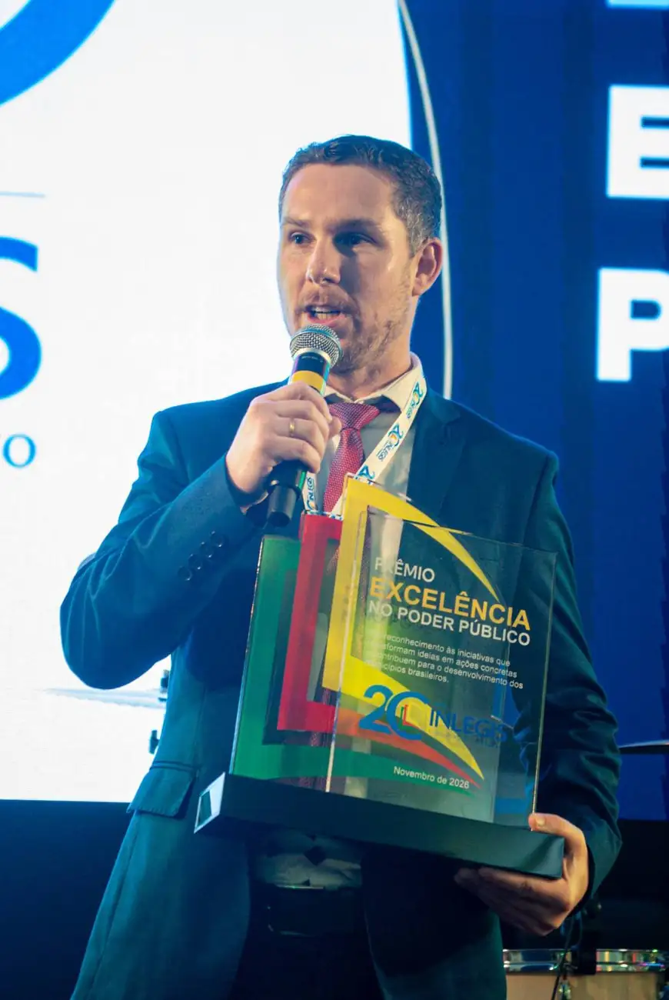

Projeto Mandato em Ação recebe Prêmio Excelência no Poder Público 2026
O aplicativo Mandato em Ação, criado para aproximar os cidadãos do mandato e facilitar o acompanhamento de solicitações, recebeu o Prêmio Excelência no Poder Público 2026 na categoria Boas Práticas no Poder Público do INLEGIS.
A premiação ocorreu em 12 de novembro de 2026, em Porto Alegre. A Cristal Web Rádio divulgou reportagem sobre o reconhecimento e entrevista realizada em 16 de novembro, explicando o propósito da iniciativa.
Consultar a apresentação no portal do INLEGIS ↗
Fontes: Cristal Web Rádio e INLEGIS. Links externos.
